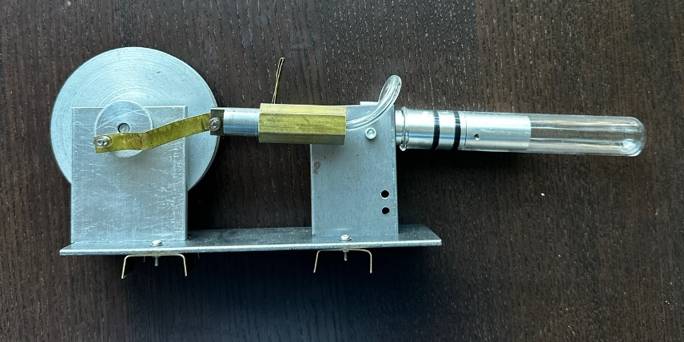
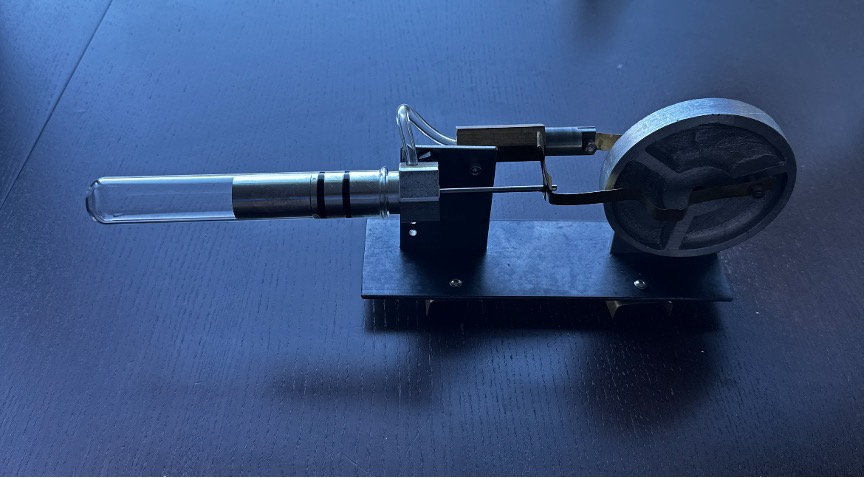
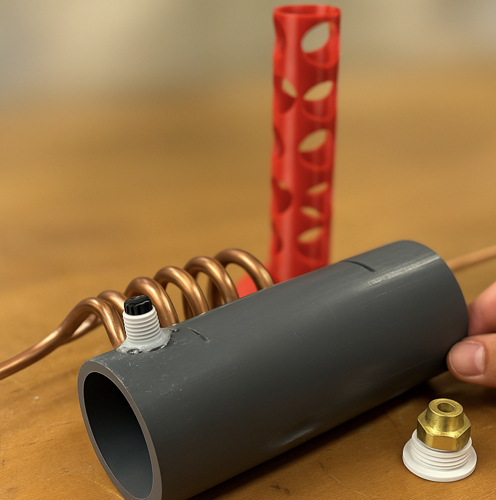

Project 1: Manufacturing – Sterling Engine
Project Timeline: January 2022 – May 2022
Designed and fabricated a fully functional Stirling engine to demonstrate principles of thermodynamics and mechanical motion. The project emphasized precision design using CAD, application of Geometric Dimensioning and Tolerancing (GD&T), and hands-on manufacturing using a variety of machining methods.
Components
Flywheel (precision-machined aluminum disk): The flywheel, made from aluminum, was machined on a lathe starting with rough turning and facing operations to define the profile. A boring operation was then used to create a precise center hole for press-fitting onto the crankshaft. The outer edge was chamfered and deburred, and the flywheel was carefully balanced to ensure smooth rotation during engine operation.
Crank Arm and Linkages: The crank arm and linkage components, cut from brass, were first rough-shaped and then milled to final dimensions using vertical and horizontal milling operations. Hole features were drilled with a precision drill press, and some reamed to achieve the required fit tolerance. Manual filing and deburring ensured clean edges and smooth articulation during rotation.
Power Piston and Displacer Cylinder: These components were turned on the lathe from aluminum and steel stock, requiring tight roundness and fine surface finish through polishing or lapping to reduce leakage and friction.
Base Plate and Support Brackets: Fabricated from sheet metal using a shear and press brake. CNC or drill press used for accurate hole positioning, ensuring alignment for the moving assembly.

Figure 1. Front view of the Sterling Engine

Figure 2. Isometric view of the Sterling Engine
Project 2: Heat Exchanger Project
Project Timeline: August 2022 – December 2022
Fabricated, tested, and evaluated the performance of a counterflow heat exchanger, incorporating a custom 3D-printed baffle to improve thermal transfer efficiency. The goal was to design a compact system capable of enhancing heat exchange between two water streams moving in opposite directions.
Components
Main PVC Shell: The main shell of the heat exchanger was constructed using a PVC pipe, cut to length using a bandsaw and finished with a deburring tool to smooth the inner and outer edges. Holes were drilled into the PVC body using a drill press to accommodate the inlet and outlet fittings. These holes were carefully measured and aligned to ensure leak-free connections and minimal flow disruption. Fittings were bonded in place using epoxy adhesive and reinforced to handle fluid pressure.
Internal Copper Tubing: The internal coil, responsible for carrying one of the working fluids, was made from copper tubing. The tube was bent into a tight helical coil using a manual tube bender to maximize surface area within the PVC shell. Care was taken to avoid kinking and to maintain consistent spacing between turns, ensuring optimal heat transfer and minimal pressure loss.
3D Printed Baffle: To direct fluid flow and promote turbulence, a custom baffle was designed in Fusion 360 and 3D printed using PLA filament. The baffle featured a vertical cylindrical geometry with a helical pattern of cutouts, designed to channel the shell-side fluid along a longer, swirling path, thereby increasing contact with the copper tubing. After printing, the baffle was cleaned and post-processed with light sanding to remove support artifacts and ensure it fit securely inside the PVC pipe.


Figure 3. Custom baffle on the left and different components on the right